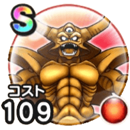

エスターク
災厄の目覚めこころ最大コスト+4スキルの斬撃ダメージ+10%ギラ属性斬撃・体技ダメージ+10%会心率+4%眠り耐性-50% / 9.0点
くわしい特徴
【ランク特殊効果】 こころ最大コスト+4スキルの斬撃・体技ダメージ+10%ギラ属性斬撃・体技ダメージ+15%メラ属性斬撃・体技ダメージ+9%会心率+6%みかわし率+7%ガード率+7%【二刀】会心率+1%ターン開始時HPを30回復するターン開始時MPを15回復するこころ最大コスト+4スキルの斬撃ダメージ+10%ギラ属性斬撃・体技ダメージ+10%会心率+4%眠り耐性-50%